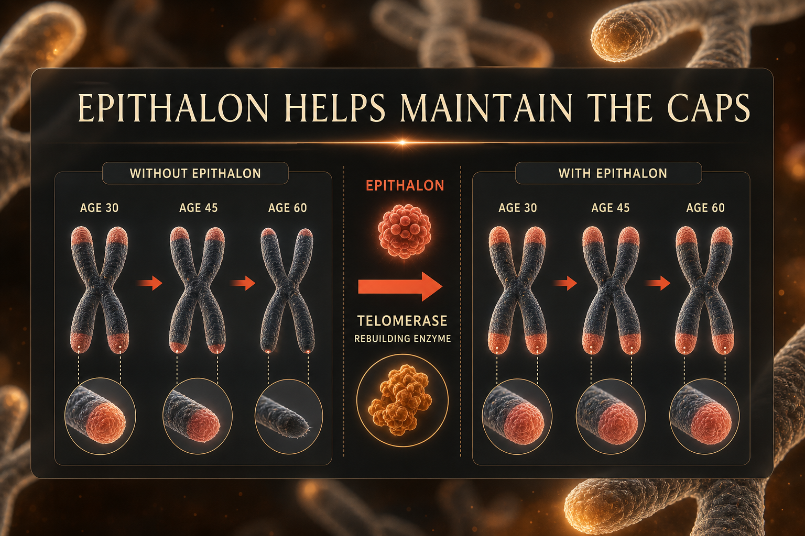

What Epithalon Is
Epithalon (also spelled Epitalon) is a synthetic tetrapeptide - four amino acids (Ala-Glu-Asp-Gly) - developed by Dr. Vladimir Khavinson at the St. Petersburg Institute of Bioregulation and Gerontology in the 1980s as a synthetic derivative of epithalamine from bovine pineal gland tissue.
One of the most extensively researched Russian longevity peptides. Scheduled for FDA PCAC review July 24, 2026 for potential 503A inclusion, specifically for insomnia. Primary interest: telomerase activation. Telomeres are the protective caps at chromosome ends that shorten with each cell division, associated with biological aging. Telomerase is the enzyme that can extend or maintain telomere length. Epithalon has been documented to activate telomerase in human somatic cells in vitro.
Plain English Version
The Protective Cap on Your Chromosomes
Every time cells divide, chromosomes copy. The copying mechanism cannot reach the very ends - like a photocopier that cuts off the last half-inch of every page. So chromosomes have disposable protective caps called telomeres at their ends. Each copy loses a bit of cap, not important information.
When caps run out, the cell can no longer divide safely. It enters senescence - stops working properly, produces inflammatory signals, contributes to aging tissue degradation. Telomerase rebuilds the caps. Young cells have more active telomerase. With age, telomerase activity declines.
Epithalon activates telomerase. It does not stop the copying process. It helps the enzyme rebuild caps more actively, extending each cell's functional lifespan. Not immortality - maintenance. But in biology, maintaining the caps better equals cells that function more reliably for longer.
One sentence: Epithalon activates telomerase - the enzyme that maintains the protective caps on your chromosomes - potentially slowing one of the most fundamental mechanisms of cellular aging.
How To Picture It

How It Works
Epithalon activates telomerase (hTERT) in human somatic cells. It also modulates pineal gland melatonin production, supporting circadian regulation independent of telomere effects. Secondary: antioxidant activity, stress hormone regulation, gonadotropin modulation in aging individuals.
Documented Benefits
documented in human cell studies
in vitro and animal models
melatonin regulation
counterintuitive given telomerase activation
Dosing Protocol
| Protocol | Dose | Duration | Frequency |
|---|---|---|---|
| Standard course | 5-10mg/day | 10-20 days | Daily |
| Annual course | 10mg/day | 10-20 days | Daily |
| Frequency | 1-2 courses per year | — | Annual or biannual |
Unique: short concentrated annual or biannual courses, not continuous daily protocol.
Reconstitution Standard
ET (10mg vial) + 2ml BAC water = 5mg/ml 5mg = 100 units | 10mg = 200 units (use 2ml syringe)
Dosage Build-Up Timeline
- Days 1-3: 5mg daily - assess tolerance
- Days 4-20: 5-10mg daily - full course
- Days 21+: Rest until next annual course
- Repeat in 6-12 months
Common Mistakes
course protocol only
cellular/long-term, not subjective short-term
same compound, different transliteration
use during active course
Contraindications And Cautions
telomerase activation is double-edged; discuss with oncologist
longevity protocols not appropriate for developing individuals
What To Track
- Sleep quality during and after course (1-10 daily)
- Energy levels
- Telomere length testing if available - expensive but directly relevant
- Biological age markers if baseline bloodwork available
Stacks Well With
- NAD+ - complementary longevity; NAD+ addresses energy and PARP repair, Epithalon telomere maintenance
- Thymosin Alpha-1 - immune longevity pairing; often run in sequential annual courses
- MOTS-c - mitochondrial plus telomere longevity dual approach
Sources
- Khavinson VKh et al. Epithalon activates telomerase. Bulletin Experimental Biology Medicine, 2003. pubmed.ncbi.nlm.nih.gov
- PeptideInitiative Epithalon. peptideinitiative.com
- FDA PCAC July 24 2026 - Epitalon review. fda.gov
For educational and research documentation purposes only. Not medical advice. Always speak with a qualified healthcare professional before making health decisions.